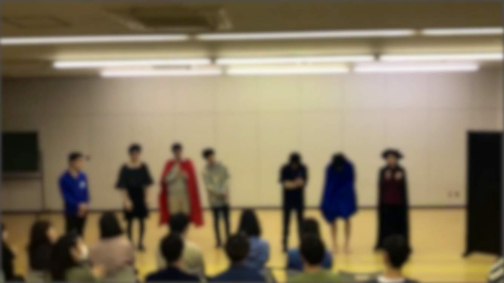
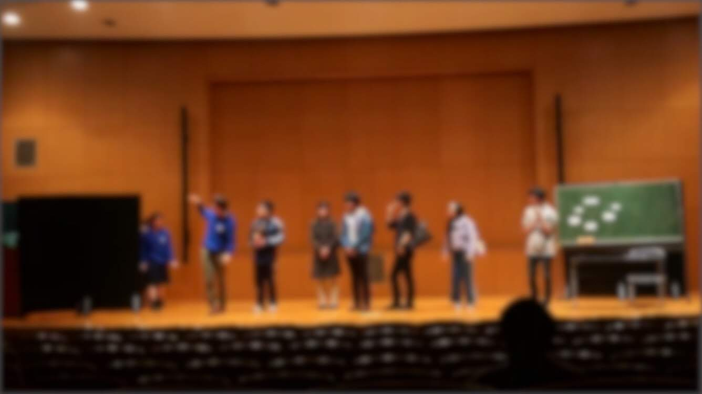

公演内容
「白豚姫の野望]

白豚姫の野望
白雪姫の5年後を描いた作品
アドリブあり、ギャグあり、殺陣ありのてんこ盛りの作品でした。
ハッピーエンドのその後はほんとに幸せなのかを描いた作品!
「I want you to be my baby」

I want you to be my baby
恋を引っ掻き回すのは天使と相場が決まっていますが
その天使すら巻き込んだ、ドダバタラブコメディ
その恋の行方とは・・・・br>
以上２作品 ２週間通して、部員全員が全力を出して素晴らしい発表となり
一年生に楽しめてもらえたと思います！！！！╭(๑•̀ㅂ•́)و
来年も素晴らしい公演になるよう頑張ります！！